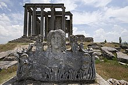
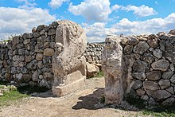

Prehistory of Anatolia and Eastern Thrace
The Anatolian peninsula, comprising most of modern Turkey, has been inhabited by modern humans since the late Paleolithic period.[60] The European part of Turkey, called Eastern Thrace, has been inhabited since at least 40,000 years ago and is known to have been in the Neolithic era by about 6000 BC.[61] The spread of agriculture from the Middle East to Europe was strongly correlated with the migration of early farmers from Anatolia about 9,000 years ago and was not just a cultural exchange.[62] Anatolian Neolithic farmers derived a significant portion of their ancestry from the Anatolian hunter-gatherers.
Present-day Turkey contains some of the world's oldest Neolithic sites.[60] Göbekli Tepe is the site of the oldest known man-made structure in the world, a temple dating to c. 9600 BC,[59] while Çatalhöyük is a very large Neolithic and Chalcolithic settlement in Anatolia, which existed c. 7500 – c. 5700 BC. It is the largest and best-preserved Neolithic site found to date.[64] The Urfa Man statue is dated c. 9000 BC, to the period of the Pre-Pottery Neolithic, and is defined as "the oldest known naturalistic life-sized sculpture of a human".[65] Troy was first settled in the Neolithic Age, with habitation continuing into the Byzantine period. Troy's Late Bronze Age layers are considered potential historical settings for the later legends of the Trojan War.
The earliest recorded inhabitants of Anatolia were the Hattians and Hurrians, non-Indo-European peoples who lived in Anatolia as early as c. 2300 BC. Indo-European Hittites came to Anatolia and gradually absorbed the Hattians and Hurrians c. 2000 – c. 1700 BC. Various other ancient Anatolian populations have also lived in Anatolia, from at least the Neolithic until the Hellenistic period.[14] Many of these peoples spoke the Anatolian languages, a branch of the larger Indo-European language family.[69] Given the antiquity of the Indo-European Hittite and Luwian languages, some scholars have proposed Anatolia as the hypothetical centre from which the Indo-European languages radiated.[70] The first empire in the area was founded by the Hittites, from the 18th through the 13th centuries BC. The Assyrians conquered and settled parts of southeastern Turkey as early as 1950 BC[71] although they have remained a minority in the region.[72]
Following the collapse of the Hittite empire c. 1180 BC, the Phrygians, an Indo-European people, achieved ascendancy in Anatolia until their kingdom was destroyed by the Cimmerians in c. 695 BC.[73] The most powerful of Phrygia's successor states were Lydia, Caria and Lycia.
Assyrian king Shalmaneser I (1263–1234 BC) recorded a campaign in which he subdued the entire territory of "Uruatri".[74][75] Urartu re-emerged in Assyrian inscriptions in the 9th century BC.[76] Starting from 714 BC, the Urartu state began to decline and finally dissolved in 590 BC when it was conquered by the Medes.[77]